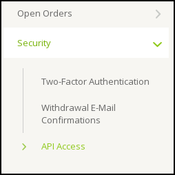
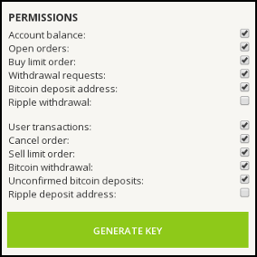
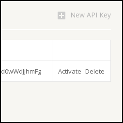

API Access How-To: Step 1 - Login
Log in to your Bitstamp account and go to Account -> Security -> API Access.

API Access How-To: Step 2 - Create Key
Select most of the permissions, except for "Ripple withdrawal" and "Ripple deposit address", then click on "Generate Key".

API Access How-To: Step 3 - Activate Key
The new key should appear in the list. Click on "Activate" next to it to receive a confirmation email from Bitstamp. Follow the link in the email to activate the API key.

API Access How-To: Step 4 - Enter Key Details
You are ready to use the Hive Bitstamp app. Return to the login screen and provide your Bitstamp Customer ID along with the API key and API secret that you just created. Good luck!